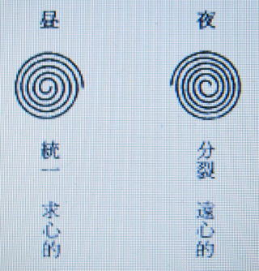
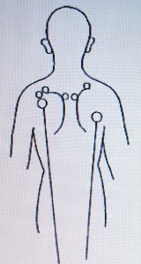

浄霊の原理 ８ （治療時代）
明主様御講話 「人間は霊体が実体」 （昭和15年11月9日）
「この治療はいままでの歴史初まって以来ないと言っていいくらいの治療で、ごく根本からお話しなくてはよく判らぬ。
そのため、まるで治療とは関わりのないようなお話、いわば宇宙の真諦とか、真理とかいったことが根本になっている。
根本としてはだれ知らぬものもないが、日月地で、この三つがいっさいの根本になってる。
この治療の根本原理と世の中の動きと合って行くから、この話によって世の中の動きの根本もよく判ることになりたいへんいいと思う。
いま世の中が非常な速度で転換せんとしており、どうなって行くかさっぱり分からぬのが一般の状態ですが、それがだいたい見当がつく。
この意味において、この治療の原理は非常に大きな意味があるわけである。
昔から三位一体ということを言う。この言葉はだいたいバイブルから出た言葉と思うが、たいへんな意味のあることである。
これはいま話すと分かるが、三つのものが一つになるということである。
一番大きな三つのものと言うと、日月地である。
この三つのものが一つになるということは、今日までも変わったことはないが、これから話せばなるほどと思われる。この三つが根本になってる。
元素から言うと（性質から言うと）火水土となる。
これは天地の構成で、経緯三段になっている。
あらゆるいっさいのものは、この三つによって作られ、火と水と土の元素の入ってないものは一つもない。
いっさいはこの火と水と土である。数からいうと五六七となる。


土は地を略したものナルという数。
日、月、火、水、木、金、土。
われわれが日々使っているものは七つしかない。
これはキリストが言った、この地球は七日目にできたと、それで七日目には休息するというので日曜を造った。
種々な神道などの天地創造説によると、宇宙は水蒸気のごとくモヤモヤ煙のごときものであったが、
だんだん別れて軽いものは天となり、重いものは固まって、その固まったものが地球となったという。
それで地球は造物主が造られた完成したもので、ここに初めて生物が住むことができたのである。
それで地は完成の数であり、七という数は意味がある。
緯は空間に火水土がある。
空間は霊気と空気である。
物質はすべて土からできていて、土に還るものである。
火と水と結合せるため、ちょうどよく生物の住み得る空間になっている。
故に空間は火と水と混ったものとみていい。いままで空気は知っていたが霊気は知らなかった。
この霊気が治療の根本である。
経の火水土、緯の火水土、このうち火が主になっている。
肉体は土と水。
あらゆるものはみんなそうである。
火水土がピッタリと合ってる。
故に経と緯に火と水と土になってる。
これがいっさいの実体である。
治療する前に参考になることをお話したほうがいいと思う。
この治療が霊的治療というのは、だいたい人間の身体は霊と体と両方で成り立っているものである。
体というのは肉体、霊というのは肉体と同じ霊体というものである。
手なら手の霊体の形がある。
その証拠に手足が痛くて切ることがあるが、それで痛みのなくなるわけだが、なおその先のほうが痛む、手のある感じがする。
これは切っても霊体はそのままあるからである。
物質の法則は科学では未だ解っていない。私のほうでは判っている。
霊が主で肉体が従、そういう法則がある。
これは私がこしらえたのではない、前からあるのである。
ただそれを知ると知らぬの差である。
故に病気は霊のほうを治さなければ絶対に治らぬ。
霊の毒素または膿をとれば、肉体はそれに追随して、霊体の汚いものをとると下痢になって排泄する。
医学は霊を無視し、肉体だけとろうとするから治らぬわけである。
しからばいままであらゆる偉人や学者が研究したにかかわらず、病気は治らぬ。
本当に治る方法がなかったのはどういうわけか、病気とはいったいなんのために起るか、なんだかさっぱり分からぬ。
私は病気の本体と、いかなる病気も治るということを発見創造したのである。
この二つのものが最大眼目なんである。
いままでは肝腎なことの発見ができなかったから治らなかった。
天地の森羅万象は三つのものでできてるが、いままで二つのものしか判らず、そのため治せなかった。
一二三とあれば、二と三は分かっていたが一が判らぬ。
ところがその一でなければ病気は治らぬ。
その一を私が発見したというわけである。
知ってる人は知っていても、その一を生かすことができなかった。
それを私が発見した。その一はすなわち霊である。
目に見えるあらゆるものは霊と体でできている。
霊と体で生きてるというと生物ばかりのようだが、そうでない。
あらゆるものがそうで、火鉢なら火鉢これも生きている。
生きてるから人間の用をなしている。
何年か経つと錆び朽ち、霊が抜ければくずれて形がなくなる。
動物の霊は精霊という字を使い、ふつうの物質のものは単に霊という。
故に人間は精霊と肉体と両方のもので生きている。
精霊の中心は心・・・魂である。
魂は目に見えぬくらい小さい。
今までの療法は精霊を認めぬ。
肉体だけをみて治そうとしていたようなもので、ちょうど手を動かすのに、これを動かさぬよう外部から努力したようなものである。
実は心が手を動かしているので、まず心が手を動かさぬようにすればなんでもない。
本療法はその目に見えない心のほうも治そうとする方法なのである。
人間の肉体は水と土でできている。
なんとなれば人間の食物は水からとれたか土からとれたもので、それを食って生きてる。
精霊は火であるから、結局人間は火水土でできてる。
あらゆる物は火水土でできてる。
いままで水素は発見されてるが、火素は発見されていない。
こんな判りやすいことが気がつかなかった。
煙突や、ストーブを焚いても、あの熱いものは目に見えぬ。
水はだいたい見える。
火素は一番判らなかったわけである。
霊界には火素と水素と両方あり、これが密合してる。
霊界から火素をとれば熱がなくなり、すべては凍ってしまう。
月の世界のようになる。酸素は割合火素に近い。
人間の霊体は霊界におり、水の部分は水素のほう、空気の世界におり、肉体は目に見える世界におり、故に人間の体は火水土で、人間を支配せるものは火素すなわち霊素である。
これある故に生きており抜ければ死ぬのである。
霊体に汚れが溜まれば病気になる。薬の毒が溜まるというが、薬の霊が霊体へ溜まる。
薬の霊は非常に毒素がある。
それが霊を曇らすのである。
霊の曇りと相応した同じ物質が体へ溜まる。
毒血なら毒血が溜まると、それだけの霊が霊体へ溜まる。
体のほうの膿や血をとると、霊のほうがとれるかというとそうではない。
それは一時的ですぐまた溜まる。
瀉血（しゃけつ）療法、蛭血（てっけつ）療法などは霊の曇りを無視している。
永遠の真理としては、病気を治すには霊の曇りをとる以外にはない。
機械や薬で霊の曇りをとることはできぬ。
霊の膿をとれば薄い毒血となり漿液となり、濃いのは下痢、痰、小便などで出てしまう。
他の療法では絶対に治らぬと断言できる。
霊の曇りは光でとる。
人間はこの光をみんな持っているが、出す方法がなく、勿論知らなかった。
不思議のようだが判ってみればなんでもない。
光が霊の曇りを射るから溶けてゆく。
押せば力は出ぬ。
想念が指という体のほうへ力を入れるから出にくい。
溶かす場合は力を抜いてしまう。
そしてどこまでも霊を放射してゆく。
さわらず押さずの程度で擦る。
治りの悪い人は力を入れる人である。
体ばかりか知らぬ人である。
大きく擦るより三つくらいに別けて擦る。
悪い所というものは小さいものであるからである。
そこへ集注してすればとてもよく治る。
一カ所に塊があると、そこへだんだん毒が溜まって行くもので、現在ある塊といえども三年とか十年とか、とても前から溜まり始めたものなんである。
医学ではそれを知らぬ。
神様は、人間をお作りになったお目的は、理想世界天国をおつくりになるにある。
天国とは完全な世界、不完全、不合理のない世界、不幸のない世界で、それができる。
人間はいままでできなかったからできぬものと思ってるが、神様は着々準備せられている。
病貧争のない世界で、そのうち一番肝腎なことは病気で、そのために浄化作用があり、感冒のごとき恩恵がある。
浄化ゆえ病気はすてておけば必ず治るものであるが、ただ今日の人間は膿や曇りが多すぎるため、非常に苦しみや痛みが多いため治療の必要がある。
故にこの治療が世界に拡がり、百年も経てば治療の要もなく、薬毒もなくなり、病気のない世界の来るのは必然である。
いままで、病気とはそういうものなることを知らず、熱、痛み、不快などだんだん昂ずると死ぬと思った。
それは反対で、それらが強いほど治りつつあるわけである。
そこでそれを止めるべく毒を服ませ身体を弱らした。
これが間違いの根本である。
毒だから服んではいけないというように、神様はまずくつくった。
アダム、イブの禁断の果実のようなるものである。
かかる根本的誤りにとりつかれて病気の苦しみを得た。
日 月 地
火 水 土
いままでは火というものがごく少なかった。
分かりやすくいえば夜だったから日が出ていなかった。
水と土、月と地の世界だった。ちょうど世界がそうなっていて、日本は明治以前には世界地図にさえのっていなかった。
世界に認められ、つき合うようになったのはごく最近であった。
これは意味のあることで、宇宙というものは陰陽ということをいう。
陰 陽 これは夜昼ということになり、なにごとにもこれがあり、
明 暗 大中小いく通りにもある。火水土も大中小になってる。
少なくともいままで一万年に夜昼ありと仮定し、その夜昼の境目はちょうど今である。
いままでは夜で月の世界、月は照るときと暗のときとある。
ちょうどそのごとくあらゆる治乱興亡あり、月照ってるときは平和、暗のときは戦いがあった。
いまはその最もひどい時とみていい。
今度昼の世界になるについて、日本がだんだん世界へ表われてきた。
いま、東亜新秩序ができた以上、世界の三分の一の支配者になったわけである。
昼の世界は夜と反対になる。
時計も左へ捲くとしまり、右にまわすとあける。あらゆるものがだんだん統一される。

最後に世界は三つになる。
日本が一番上になり初めて平和が来る。
日本でもいますばらしい勢いでそうなりつつある。
米なら米で、農家から直接政府へ集まり一般へ配られる、統一されるわけである。
いま、戦争のためこうなっているんで終われば元の通り自由販売になると思うがそうでない、
否むしろますます統一さる。あらゆる商人がみんな組合になり、共同販売というようなことになる。
元のようにかえることは絶対にない。
これは昭和十年に話したことがあるが、あらゆる産業は合同され、仮に産業省というものになる。これが統一する。
会社は会社としていまのままで行く。
一つに統一されるから利益は平均され、それが三分され政府、資本家、労働者と分配されるわけである。
現在の動きがどうしてもそうならなくてはならぬことになる。
競争がなくなるから利潤を平均して、タンと大きな利益の配当はなくなる。
そして産業などの利潤は政府が保証するわけで、ちょうど公債と同じわけになる。
例えば、日本なら今日の株券が公債よりもいい利回りとなる。
事業の盛衰によって半期半期で違うわけである。
四分二厘、三厘、四厘というふうに、これも政府が保証するから絶対安全である。
その時代には産業証券というような名となろう。
そして産業証券の利益はほとんど同じであるから、価格の変動がなくなるゆえ、投機性がなくなる。
いまのような賭博的分子がなくなる。
今日の株式取引所のようなものもなくなる。
あるいはもっと強大な半官半民の証券交換所というような機関になる。
そして政府は三分の一の利をとるから、税金はとらなくていい。
いままではずいぶん複雑していた。
統一とは非常に簡単になることである。
いままでは西洋医学のごとく分裂したため、非常に複雑になった。
その時代にも金持ちはある。
私有財産はどこまでもある。
これを撤廃するとせば、ロシアと同じようになる。
ただ決算は公開されるから、富豪はだれがいくらとったかすぐに分かる。
今日では公開されてもよく分からぬが、もっとはっきりする。
この組織になれば判るから、全部私有することができなくなり、社会事業とか、労働者の娯楽などのために使うこととなる。
また全般的に非常に良心的となり、いい社会になる。
分裂すること、換言すれば破壊すること。
善はまとまること。
対照的にいえば善悪に分けていい。
悪は善になることもあれば、善が悪となることもある。
これは時間的の関係で、時間により変化する。
そのときの状態に付して善悪にする。
どっちも必要があるのであって、またどっちか勝ち負けはある。
人間は悪心を制すべき良心があれば、それは安心な人である。
この制える力が弱いと悪の行動となり、間違いが多い。
人間はどっちかが強いので、ただ良心のほうが一歩強ければいい。
夜の世界では悪のほうがちょっと勝ち、昼では善のほうがちょっと勝つ、そこで統一的な動きはすべてが良心的になる。
現在の動きはすべて良心的になりつつあるのである。
贅沢禁止令などすでにそうである。
金があればどんなこともできる。
しかし多くの人は物が足らず、うまい物も食えず苦しんでる。
少数の人の贅沢のために、多数の者が苦しむことになる。
それで生活必需品が足らなくなるので、それを多数の人に振り向けるやり方になった。
いままでの政党は、主義の善い悪いでなく戦った。
反対党のものが良いことを言っても、それに反対する。
今度はそういう喧嘩もなくなる。
商人など非常に儲けた。相手を倒しても多くの労働者を絞っても、自分だけ儲けて贅沢した。
それもなくなる。儲けも定まってしまい、ごまかして儲けることができなくなった。
立派な着物着て自分一人いい気持ちになるが、人は見て羨み悲しむ。
多くの人が不快になり、わずかの人がいい気持ちになる。
これは悪である。大勢の人とともに楽しむ。これが良心的である。
ほかの人が悪い思いをしてもいいというのは、なんとしても悪である。
これらは宇宙のリズムと反対になったから、すべて大勢のよきよう制限され良心的になった。
つまり、みんなの仲間がみんなよいよう、全体主義、公益優先になる。
国民全体がそう思えばみんなよくなる。
こういう新体制でいけば、みんなよくなるにきまってる。
これは何年も続けば慣れてきて非常にいい世になる。
そうして、いまに物も余るようになる。
であるから、こういう新体制になったことは、本当はありがたい世になったわけである。
いままでの自由主義ではうまみがない。
これは悪が残っているからで、あらゆるものが良心的となるゆえ、だんだん犯罪者は減ってゆく。
ゴマカシがなくなり、人間が嘘をつかなくなる。
長い間夜の世界で悪のほうが勝っていたから一時的栄えた。
しかし、悪は勝ち通さない、ある期間栄えるだけである。
そういうリズムであった。これは、ぜんぜんそれはなくなるのである。
花柳界などもだんだん制限され四分の一くらいしかなくなったという。
それも自動車の乗りつけできず、遊んでいても一々臨検を激しくするという。
これは、闇取引するのを調べる。
こういう遊びをする者は、あぶく銭を儲けたものが多いからだ。
一々儲けた道を聞くのだそうである。
すると必ず闇で儲けたものだという。
闇で儲けたものでなくては、花柳界で使えない。
そういうような関係で花柳界は非常にいまさびれたという。
ああいう所へ行けなくなったということは、善が勝ったわけである。
ああいう所がなくなると不正の儲けがなくなる。
もっと明るい楽しみになる。
とにかく正しい世の中になっている。
せがれ や娘の不良などの心配もなくなる。
統制となると地域的配給になるから、一都なら一都のみで配給するから非常に労力が省ける。
物資が足りないようなことがなくなる。
病気というものは、汚いものが溜まるから右進左退で、左進右退は治る作用。
これが病気であるが、病気の起ったのは右進左退が先である。
霊と肉とぴったり合っているので、人間としての働きができる。
水 空気 冷
土 物質
火 霊 熱
熱と冷と混って生物の住むにちょうどいい気候になってる。
空間にあるのは、火の霊と水の霊。眼に見えるのは体。
火と水と合って力が生ずる。
ガソリンなど熱すると燃えて、すばらしい動力が起る。
いずれ科学のほうで火がわかる。
昼になると殖えるからである。
昼の世界では、火の霊が勝って多くなった。
火の霊が強くなると左進右退となる。
学理はいままでと反対にならなくてはならぬとある学者がラジオで言っていた。
いままでは科学が学問を支配した。
しかし、科学は学問を主として、その中へ入るべきものである、と言っていた。
これらも時節が変わったからである。
左進右退になると昼間の動きゆえ、われわれが生きているのは、霊体と肉体と合致しており、
霊体が霊界にあって、霊体が昼間に合うようになってるといいが、
いままで夜の世界に長い間いたため曇りがある。
曇りは昼間になるとすぐ眼に立つから、どうしても清められなければならぬ。
病人のふえた根本はそこにある。
毒血とか膿とかの毒素は、霊体に滲みると一つの曇りになる。
ちょうど人間の霊が明るいものなら、それは一つの暗いものになる。
大空にすれば一つの雲になる。
その雲なり、曇りなりをとるのに霊を放射する。
それは一種の光である。光は人間だれでもある。
肉体が着物を着ているごとく、霊も着物を着ている。
普通ちょっと厚くして三寸くらいの霊衣、これは見えることがある。
唐紙の前に人間をおき、しばらく みつめているとみえる。
肉体から白いような青いような光を発してる。
それで弱いとか心の悪いとか、曇った人などは薄いのである。
その霊の光、それを集注して強いものになる。
光のエキスみたいなものになる。
これを手から放射すると曇りが溶ける。
溶けるからきれいになる。
すると、肉体の汚いものはそこにいることができぬようになる。
そこで痰や下痢で出る。薄い所は漿液になる。
横痃（よこね）というのがあるが、それは医者でよく切る。
するときっと赤貝のごとき肉や膿の魂が出る。
膿などネトネトしたものが出る。
自然に穴が開いて出る。
そのときは黄色い水とも膿ともつかぬものが出る。
そのくらい薄くなったわけで、無論分量も少なくなる。
治療すると毒素は少なくなり薄くなることはたしかである。
それがあたりまえの状態である。
ある場合小さい固まった膿を溶くと大きくなる。
元は大きい膿が固まって少なくなったもの。
これは溶くと容積がふえて淡くなって出る。
おデキとか、お腹の塊など腫れたように一時は大きくなる。
故に治療の場合それを充分心得ていて患者の悪い所へ向かって放射する場合に注意する。
西洋医学は霊をぜんぜん知らぬ、否 認めぬ故に癲癇（てんかん）、重度の精神病患者などみんな脳としている。
肉体は霊体を入れたサックのごときもので、使用に堪えねば霊は出て行く。
霊はふつう死んでから四十九日まではその家におり、五十日目に行くべき所へ行く。
普通はお寺へ行き、神道ならば産土神社または信仰している団体へ行く。
お寺で葬られれば一時お寺にいなくてはならない。
そして間もなく自分の信ずる所へ行く。
ところが信仰する所がなければ、お寺に長くいることになるのである。
人間が死ねば煙のようになると思う人は、お寺にもおれず宙に迷うのである。
中有界に迷うので六道の辻ともいい、ここは辻のようなもので、四方八方どこへでも行けるのである。
この世で死んでも邪神界へ行くものもある。
仏界にも地獄、極楽あり、神界でも天国、地獄（根底の国）あり、そこで修業する、というのは浄化作用が行なわれる。
罪は苦しまねばとれない。
これを迷信という人こそ迷信である。
ある程度浄化が行なわれると生まれ代わる。
霊魂はどしどし殖えつつあり、天国、地獄でも生まれる。
霊界でできるだけ長くいたほうが幸運である。
思い続けた想念は滲みついているもので、また死の時の想念も続く。
非常な美人は前の世はまずい顔だったかもしれない。
だから女の方は死ぬ前に美人に生まれて来ようと思ったほうがよいであろう。
輪廻転生、人間は霊が主で、霊は不滅、肉体は滅びて土となる。
五十年とか八十年とか、霊の衣をぬぐだけと言っていい。
人間は霊体が実体である。

（霊体の同じ所に同じよう曇りあり）
人間は始終火と水を吸っている（火素、水素）。
外部から曇りをとれば移動の必要なく、痛みはなくなる。
それが非常に速い。霊を支配すれば体は必ずそうなる。
医学は治さない進歩ゆえ、進歩するほど病気がふえるのはあたりまえである。
肺結核が多いのは、子供の時分から次々熱の出るのを氷冷などで固める。
子供のときは元気がそこまで行かぬから止まるが、十五から二十となると止まらぬようになる、どしどし浄化を起す。
夜 月の世界（水素）
霧は月の水がいくぶん溶けて下がるのである。
昼 日の世界（火素）
あらゆるものに霊体あるごとく、夜昼にも火と水にも霊体がある。
空間に火素が殖えた。
火素（触ってもあつく感じない）
火素を集めて病気を治す神秘的な力を授かった。
私だけでなくだれでもできるが、いまのところはあまりない。
太陽が出ても月はなくならぬ、かえって夜よりはっきりして立派な存在となる。
土も日本の日に照らされはっきり現われる。右いずれも消滅はしない。

となる。火は精神
心がもえるという、火だからである。
水ではない、心が流れるとは言わぬ。
心 左 心臓は左についてる。
物 右 人間は右手を多く使うのは物質に対するからで、左のほうは位が上である。
霊が案内し、体が後から行く・・・ 中心への結合

物質の後を霊が追かけて行く・・・

政党は、大政翼賛会
商人は、企業合同
いままで大宇宙のリズムは左進、小宇宙は右進。
今度は両方左進で合ってくる。
いままでは駆け引きでよかったが、これからは駄目である。
治療はやはり人格的に精神的の愛、慈悲をもって病人を扱う。
精神的の内容が肝腎である。これは新体制の療法で、どうしてもこの療法が発展して、今後の病気はこの療法によって治すことになる。
私の創った療法になると確信している。
この話を本として、世の中のあらゆるもの、あらゆる動きを観察すると、すべてそうなる。
世の中に処して行くにも安心して行ける。
肉体は死物である。
医学の建前から物質たる死物を健康にしても、健康になるわけはなく、病気も治らぬ。
霊に対するには霊をもってしなくてはならぬ。
霊の放射で初めてとれる。
霊をきれいにするよりほか方法はない。
いままで火がなくて霊界のことが分からなかった。
血液の汚い分子のみ循環によって一所へ集まる。
人間がゴミを一所へよせて掃溜へ捨てるようなもの、その掃きよせて捨てるときが病気である。
心臓は毒の量、質などに必要量の熱を吸収する、それを冷やす（肺・・・痰、腸・・・下痢）。
心臓は目に見えない火を吸うて溶かす。
肉体の曇りは水になって動く、それが痛みである。
故に病気とは浄気である。
医学は掃溜へ捨てるのを制えつけたようなもの。
灸、鍼は刺激によって誘導する。
天然痘と尿毒は二つとも高熱は出ぬ。
薬毒は高熱が出る。
ただあまりたくさん毒があると熱が出ない。
浄化を起しきれぬ。
熱、痛み、痒みなどは薬毒と思っていい。
レントゲンは火傷と同じくヒリヒリする痛み、針で突き刺すような痛みは薬毒。
毒と浄化の衝突で衰弱し倒れる。
弱ってるところへ急激な浄化が起ると死ぬ、肺炎のごとし。
ふつうの人の光は薄いが、御守りをかけると強く出る。
軽くすると強く出る。擦ると擦らぬとの間くらいでやる。
一生懸命やってはいけない。
御守りがあるから軽く思念してすると非常に強い光が出る。
一遍に両手を使ってはいけない。
片手に集注してやる。
細かく中に入れてかきまわすつもりでやる。
火によって魂が溶けるという気持ちでやらなくてはならぬ。
手は放してしなければいけない、手指で放射するようする。
落ちついてやるようになると、指で制えていてお腹から出す。
そして指頭へ精神を集注する。
そのとき指から放射する気持ちでお腹へウンと力を入れて出す。
これは非常に力がいる。
骨が折れるから、ある場合これを知っていていい。
光を強くする、その道具が御守りである。
御守りをかけることは、いくらでも説明できるが宗教的になる。
宗教は禁ぜられているので、ただそういうふうになるものだと思えばいい。
特に知りたい人は個人的にお話する。
いまのところ、そういう話は遠慮してる。
自分は病人だから人の病気を治しても霊がよく出ぬと思う人もあるが、そうでなく病人でも治る。
これはちょっと解り難いが、病人になってるときは全体的浄化作用が起ってる、故に霊体がきれいになりつつある。
座敷などゴミでいっぱいになってるとき、はたきで叩いたり、掃いたりしてるときであるから、病人は霊の方面からいうと汚いのではない。
病人でもなんでもない人が、私の所で働くと病気が起ることがある。
これは光が放射されるとともに溶けるからで、溶けやすくするため横に擦る。
光、水、風の働き、焼いて水できれいにする。
きれいにしてまた焼き、風で吹き払う。
太陽や熱で黴菌を殺し雨で浄める。
天地を浄めるのと同じ意味である。
押すのと擦るのと原則として半々がいい。
風のほうはときどきでいい。場合によっては風なしでいい。
相手により人により、よろしきよう相応してやる。
柔らかいのやきついのや、押し方は相手によって応変する。
人間の全体を支配せるものは頭脳の真ん中であるから、これを清める要あり。
「この中清まれ」と書く、字の働きによって霊界が浄まる。
頭の熱い人は精神散漫、物がよく考えられぬ。
精神病など特に熱い。
特に物を考えると額に毒が集まる。
八の字を引く所。
学校の成績の悪いものなどみんなこれである。
脳膜炎など前頭部が熱い。
身体丈夫なら脳溢血の血は上へ行くが、運動不足などで弱ってると逆流して手足へ行って中気症状となる。
脳溢血は、血と膿と両方あり、酒を呑んで顔の赤い人は毒血、青い人は膿のほう。
赤いほうは生命にかかわり、青いほうは中風になって長びく。
膿と血と混ったもの、これは顔色が白い。
脳膜炎は背中に膿が溜まりそれが上がって行く。
脳膜炎の場合は頭全体のときが多い。
脊髄膜炎などは治療すれば解消して下痢などになって出る、出始めれば必ず治る。

延髄
小脳へ入るのが嗜眠性
額へ行くのが脳膜炎

眼病はこれが多い、上から来る毒が眼の中へ入って見えなくなる。
こめかみの場合もある。額から瞼（まぶた）の奥のほうを浄化する。
眼からやったほうがよい。瞳の真ん中へ向かって霊を集注する。目脂が出るほど治る。
一回やって効果がなければ長くかかる。
眼の下の毒素は目へは入らず鼻から出る。
延髄と鼻とは非常に関係があり、延髄が溶けると鼻汁になって出る。
ガス中毒なども延髄へ溜まって犯すのである。
肥厚性、粘膜を刺激してカタルを起す。
耳鳴り
（一）耳下腺の膿が少しずつ出る。
（二）脳中の毒素。
扁桃腺肥大は熱の出るのを待ってやると早い、熱を出すに永くかかる。
風邪は淋巴腺、右か左かどっちかきまったもの、一遍に両方ということはない。
どしどし溶けて鼻汁や痰になって出る。
耳下腺へ行ったのはたいてい痰になる。
風邪の場合、肩に浄化が起る場合もあり、どこから熱が出たか分からぬ場合もあり、
そのときは治療していると熱が出て溶けて行くから分かる。
こめかみと肩の辺は非常に関係あり。
額のほうをやっていて肩のほうの熱がさめる。
肩部をやってさめねば両こめかみをする。
喉頭結核、むせるのと声が嗄れるのと両方あり、物を食ってもつかえたり、痰が出たりする。
顔面神経、両頬にくる場合もあり。
不眠症などみな淋巴腺、二晩続けてやればすっかり治る。
人間の身体は肩より上をやれば一番よく治る。
肋間神経の膿は溶けて肺の外に溜まる。
またこの膿が溶けて心臓、肺などを圧迫することあり。
よく心臓というのをみると肋間が多い。
脈が正確ならば心臓は悪くない。
心臓に異常なくて脈が結滞する人あり、不整はほとんど心臓。
肺尖・・・肩が張って熱をもつもの。肺門といってもほとんど肩甲骨辺りが悪い。

元肋膜やった人はよくここに残ってる
ここで目まいすることよくあり、
とても溜まりやすい
肺炎・・・肺の前面に溜まることと、後方へ溜まることあり。
手の挙がらぬ人、後ろへまわらぬ人、前方腕の付け根。
半月爪、病人にはなし、よくなると出る。
肝臓部・・・黄疸を起す。
右肋骨末下に熱をもち胸やけなどする。
肝臓腹膜・・・黄色の腹膜。
胆汁は水に交わると固まりやすい、輸胆管に石が溜まると胆石。
治療により小さく粉になる。
糖尿は肝臓を圧迫するから糖分だけ腎臓へ送る。
便秘・・・臍のまわり。
癌は丸くならぬ、不規則になっている。
筋のごとくなってるものあり。
子宮前屈、尻のほうに膿あるとき前屈する。
膀胱と子宮の間に膿のあるとき前へ行ってる。
子宮癒着は膀胱などへくっついてる。
足、予防注射などの毒、一番多いのは踵（かかと）、次に内外の踝（くるぶし）、次に膝である。
予防注射でないのは分量が多い。
分量の多いのは下脚一帯に及ぶ。
足で一番肝腎なのは大腿部真ん中の筋で、中風などで足の上がらぬのはこれ。
次に、膝の悪いのはたいてい膝の内側、吊る（こぶらがえりなど）たいてい脹脛（ふくらはぎ）横またその内側、ひどいのになると脹脛。
疫痢には水菓子、果汁などは不可、水菓子は下痢を促進するものである。
百日咳は上半身、胃を主とし胸および肩甲部。
ジフテリアは口から喉一帯に毒素が固まる。
疳（かん）の虫など両こめかみ。
耳の下へ毒血が溜まる、棒を突っ込んだように溜まると、
この毒が頭の中へ溜まる。毒血が頭の中へ入って半身へまわる。
毒血に白と赤とある。身体が弱ければ血は肉体のほうへくる。
耳のほうへ行って奥で固まったのは耳が遠くなる、耳が遠くなると脳溢血にならぬというのはこのためである。
中にはまた身体が楽していると、弱って脳へ行かず身体のほうへ行って中風になるのがある。
また両側の首の毒が溶けて両半身が中風になるのがある。
脳貧血は首のまわりの膿。
脳貧血が脳溢血になる場合もある。
脳神経衰弱もそうである。
これは後ろの毒のほうが多い、脳天に血が不足すると眠られぬ。
五感は小脳、考えるのは脳天、頭に血が少なくなると元気がなくなる。
風邪の熱はほとんど全部後頭部の右側。
後頭部は毒が溜まりやすい。
上半身から上の熱はほとんどここといってよろしい。
肩をするとき立ってやるほうがやりよく、また治りやすい。
肺が水分を吸うのは、心臓が火素を吸うそれを調節するためである。
火素の霊は御守りに仕込んである。手指からはその熱（火素）の霊が出る。
股の熱は全身的の熱になり、咳と痰が出る。
肋膜の水が安静などのため外へ出ず固まる、それがある時期に浄化が起り肺へ滲み込む、それを湿布などして固める。
それが肺壊疽、癌などになる。
胃はほとんど薬毒、肋骨末端部をする。
横からもする要あり。
腰を立てて背部も通れと霊を放射する。
また臍（へそ）のまわり、幽門を押すため腸へ物が行かず、消化不良となる。
狭窄すると嘔吐あり。
脳の反射作用のときもあり。
慢性下痢は腹部のどこかが少しずつ溶けて出るものである。
熱の出る所は、股および毛の所、右に限る。左は少ない。
特に毛の生え際に多い。
これから咳と熱の出ることあり、喘息などもこれが多い。
腹膜の熱などもほとんどこれをやればいい。
麻疹は治療すると発疹する。
出しておいて治療するとドシドシ治る。
医療によれば麻疹の毒は全部出ず、眼が悪くなったりなどする。
肩、胸、胃の毒はだいたい胃へ溜まる、嘔吐する。
疫痢は胃へまず溜まり、熱で溶かし、嘔吐し、また腸へ下がる。
腹部の熱いうちは下痢する。
脳を犯すことあり。
胃へ溜まった毒は脊髄へ行き、脳へ行くことあり。
いままで月の世界ゆえ、文化は西から来た。
最後に東の光が出て西を照らす。
東の光は太陽、これは日本である。
昼間の世界になったために、火素が殖えた、強くなった。
霊界に霊素すなわち火素が濃厚になった。
そのために明るくなった。
夜の世界は火素が希薄のため、毒素を服んでも停止された。
今度霊界の火素が殖えたから、明るい所で毒を服むと、
どうしても両方とも浄化されねばならなくなった。
火の洗礼・・・霊で霊を浄める。神様の約束によって私がさせられた。
世界中でいまにあわて出す。
キリストの書いた「世の終わりは近づけり、汝ら悔い改めよ」といい、
また最後の審判、あるいは火の洗礼というが、正にこのことである。
霊で霊を浄める、すなわち火の洗礼である。」